library(tidyverse) # Core data import, transformation, and plotting tools
library(scales) # Axis and legend label formatting
library(lubridate) # Helpers for working with dates5 Comparing and Separating Data
5.1 Learning Goals
By the end of this chapter, the main goals are:
- choose between color and faceting when separating groups
- use line charts, bar charts, and distributions for different comparisons
- use small multiples to make grouped comparisons easier to read
- decide when summaries are needed before plotting
5.2 Load Packages
gap_raw <- read_csv("Data/gapminder/gapminder_unfiltered.csv")
economics_data <- read_csv("Data/ggplot2/economics.csv", show_col_types = FALSE)
midwest_data <- read_csv("Data/ggplot2/midwest.csv", show_col_types = FALSE)5.3 Separating Data
One of the most common visualization choices is how to separate groups. The two main beginner-friendly tools are color and faceting.
5.3.1 Color
Color keeps everything in one panel:
gap_2007_sep <- gap_raw |>
filter(year == 2007)
ggplot(gap_2007_sep, aes(x = gdpPercap, y = lifeExp, color = continent)) +
geom_point(alpha = 0.6) +
geom_smooth(method = "lm", formula = y ~ x, se = FALSE, linewidth = 0.9) +
scale_x_log10(labels = scales::dollar) +
labs(
title = "Color Separates Groups Within One Panel",
x = "GDP per capita",
y = "Life expectancy",
color = "Continent"
) +
theme_minimal()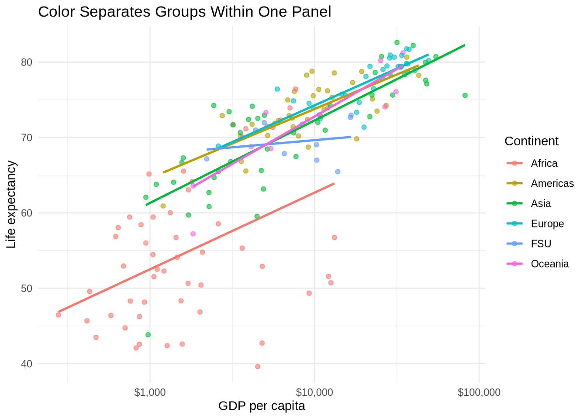
Color is compact and keeps the full pattern visible in one place. It works especially well when overlap is modest and the number of groups is limited enough to remain readable.
5.3.2 Facets
When one plot gets too crowded, small multiples are often better than adding more color or annotation.
Faceting is especially valuable when the main analytical task is comparison across groups. It repeats the same visual grammar in several panels, which makes the similarities and differences easier to detect without requiring the reader to untangle a crowded legend.
Faceting gives each group its own panel. The clearest way to see what faceting does is to take the scatterplot from the previous section and split it by continent:
ggplot(gap_2007_sep, aes(x = gdpPercap, y = lifeExp)) +
geom_point(alpha = 0.6, color = "steelblue") +
geom_smooth(method = "lm", formula = y ~ x, se = FALSE, color = "gray50", linewidth = 0.5) +
scale_x_log10(labels = scales::dollar) +
facet_wrap(~ continent) +
labs(
title = "Facets Separate Groups Across Panels",
x = "GDP per capita",
y = "Life expectancy"
) +
theme_minimal()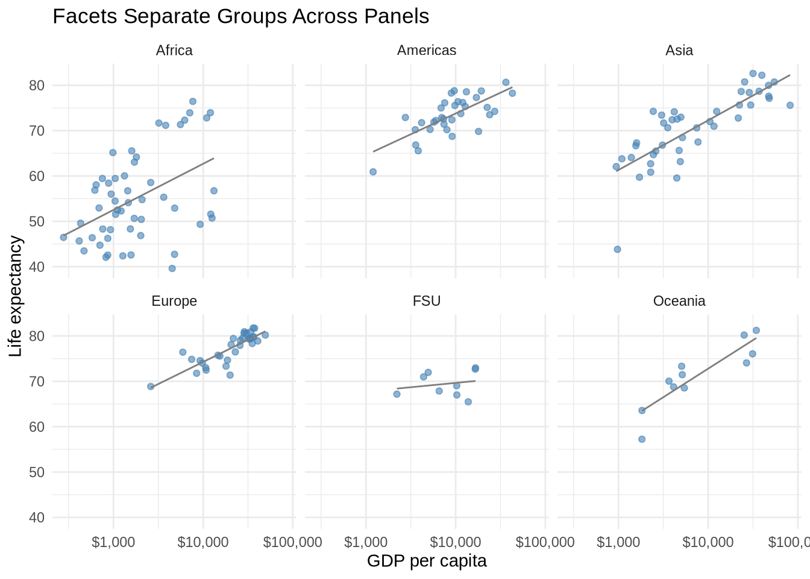
The same scatterplot is now repeated once per continent.1 Because the plot is the same one introduced earlier, only split, it isolates the faceting move itself: same data, same geom, same axes, now laid out as small multiples.
5.3.3 Controlling Facet Layout
The layout of facets can also be adjusted directly.
ggplot(gap_2007_sep, aes(x = gdpPercap, y = lifeExp)) +
geom_point(alpha = 0.6, color = "steelblue") +
geom_smooth(method = "lm", formula = y ~ x, se = FALSE, color = "gray50", linewidth = 0.5) +
scale_x_log10(labels = scales::dollar) +
facet_wrap(~ continent, ncol = 2) +
labs(
title = "Facets With Two Columns",
x = "GDP per capita",
y = "Life expectancy"
) +
theme_minimal()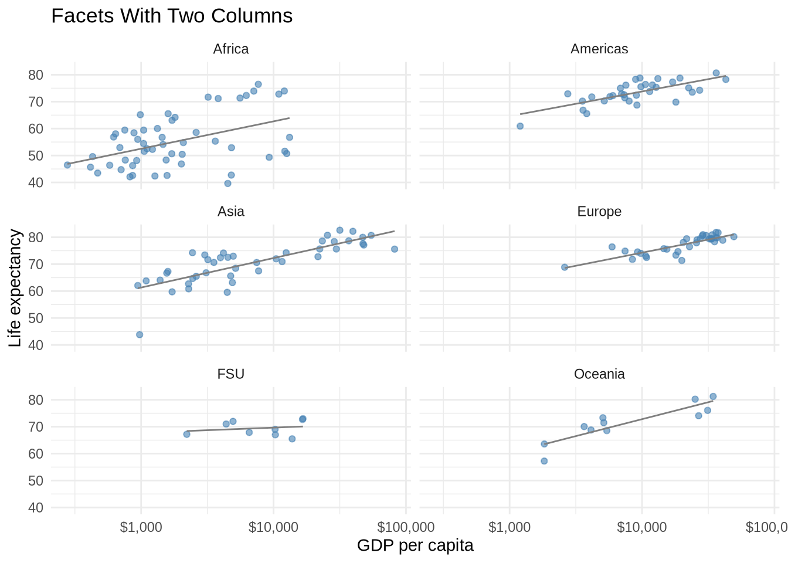
ncol and nrow are useful when the default arrangement feels too wide or too tall.
5.4 Line Charts
Use line charts when the x-axis has a meaningful order, especially time.
5.5 Working With Dates
The economics dataset is useful for line-chart practice with real date variables. It does not include an unemployment rate, and raw unemployment counts mainly rise with population over time, so the examples here use median unemployment duration (uempmed) instead.
ggplot(economics_data, aes(x = date, y = uempmed)) +
geom_line(color = "firebrick") +
scale_x_date(date_breaks = "5 years", date_labels = "%Y") +
labs(
title = "Median Duration Of Unemployment Over Time",
x = NULL,
y = "Weeks unemployed"
) +
theme_minimal()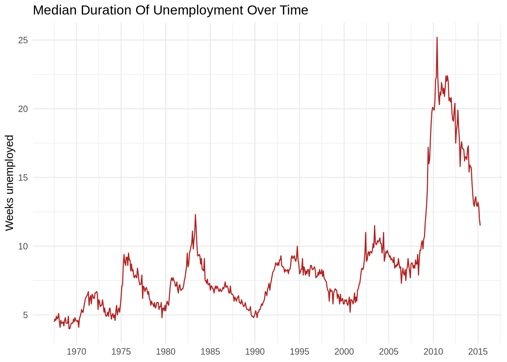
Notice that x = NULL drops the axis title entirely. When the axis is already labeled with years, a redundant “Date” title just adds clutter. A good default rule for time-series plots is to let the year labels speak for themselves.
scale_x_date() controls how the date axis is drawn. date_breaks = "5 years" spaces tick marks five years apart, and date_labels = "%Y" formats each label as a four-digit year (%b would produce abbreviated month names, %Y-%m would produce 2005-01, and so on). The "5 years" string is a human-readable interval, not a subtraction.
The choice of interval matters. A too-fine interval crowds the axis:
ggplot(economics_data, aes(x = date, y = uempmed)) +
geom_line(color = "firebrick") +
scale_x_date(date_breaks = "2 years", date_labels = "%Y") +
labs(
title = "Too Many Tick Marks Crowd The Axis",
x = NULL,
y = "Weeks unemployed"
) +
theme_minimal()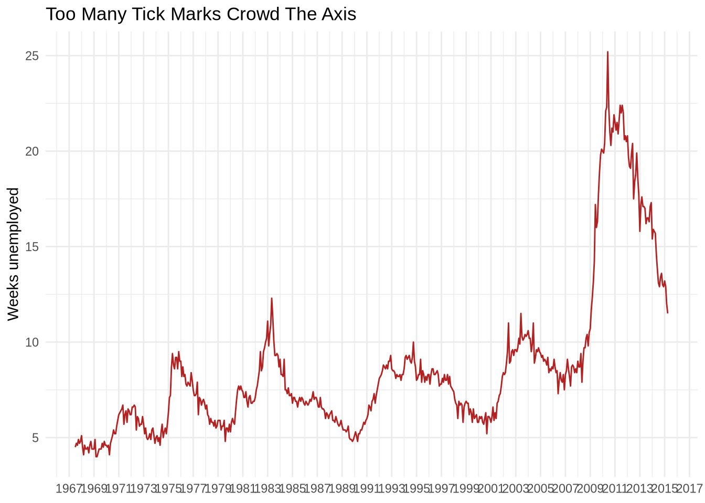
The data are identical. Only the date_breaks value changed. With tick labels every two years across a multi-decade series, the axis becomes difficult to read without rotating the labels or shrinking the font. The previous five-year version is easier on the eye.
Date scales are therefore worth handling carefully. Too many labels produce clutter, while too few remove context. Good date formatting usually balances readability with temporal precision rather than trying to label every possible interval.
5.6 Highlighting Specific Trends
Sometimes the goal is not to show the whole series with equal emphasis. Sometimes one period matters most.
Before plotting, two date operations narrow the data and flag the period of interest:
filter(date >= as.Date("2007-01-01"), date <= as.Date("2010-12-31"))keeps only the rows whosedatefalls inside the four-year window around the crisis.as.Date("2007-01-01")is how R builds a proper date value from a character string; comparing dates to other dates with>=and<=works the same way comparing numbers does.mutate(crisis_window = date >= as.Date("2008-09-01") & date <= as.Date("2009-06-30"))adds a new logical column that isTRUEfor rows inside the crisis months andFALSEotherwise. That column is the switch the plot uses later to decide which points belong to the foreground layer.
Two filter() arguments separated by a comma behave as AND: both must be true. Using & inside mutate() achieves the same thing, but produces a TRUE/FALSE value rather than dropping rows.
econ_focus <- economics_data |>
filter(date >= as.Date("2007-01-01"), date <= as.Date("2010-12-31")) |>
mutate(crisis_window = date >= as.Date("2008-09-01") & date <= as.Date("2009-06-30"))
ggplot(econ_focus, aes(x = date, y = uempmed)) +
geom_line(color = "gray85", linewidth = 1) +
geom_line(
data = econ_focus |> filter(crisis_window),
color = "firebrick",
linewidth = 1.4
) +
geom_point(
data = econ_focus |> filter(crisis_window),
color = "firebrick",
size = 1.8
) +
scale_x_date(date_breaks = "3 months", date_labels = "%b\n%Y") +
labs(
title = "Median Unemployment Duration During The 2008 Financial Crisis",
subtitle = "The crisis window is highlighted in red; the rest of the series stays in the background",
x = NULL,
y = "Weeks unemployed"
) +
theme_minimal()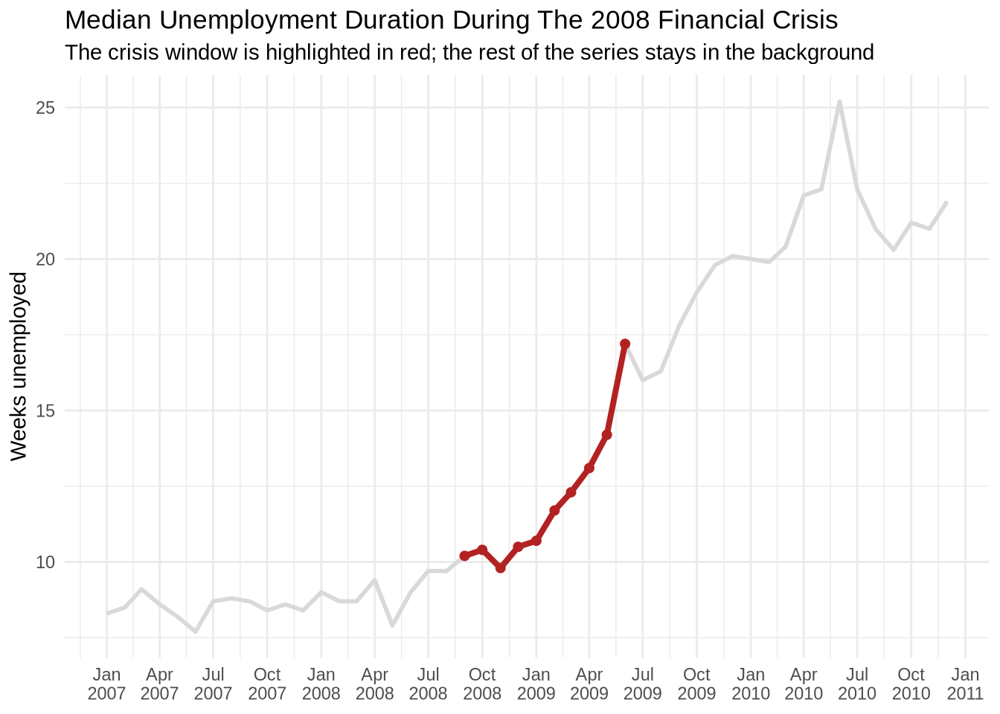
The plot then reuses the same crisis_window column twice, inside filter(crisis_window), to supply data for the red highlight line and the red points. This is a common pattern: use mutate() to create a logical column once, then refer to it from as many downstream layers as needed rather than re-computing the condition each time.
Highlighting is often a better choice than adding more variables. It directs attention without changing the underlying data. Here the full line stays light gray so the broader context is still visible, while the crisis window is drawn in red and marked with points so the emphasized period stands out immediately.
5.7 Faceting A Time Series
When several groups need to be compared over time, faceting can keep the lines readable.
gap_continent <- gap_raw |>
filter(year %in% seq(1952, 2007, by = 5)) |>
group_by(continent, year) |>
summarize(mean_lifeExp = mean(lifeExp, na.rm = TRUE), .groups = "drop")
ggplot(gap_continent, aes(x = year, y = mean_lifeExp, group = 1)) +
geom_line(color = "steelblue", linewidth = 0.9) +
facet_wrap(~ continent) +
labs(
title = "Average Life Expectancy By Continent Over Time",
x = NULL,
y = "Life expectancy"
) +
theme_minimal()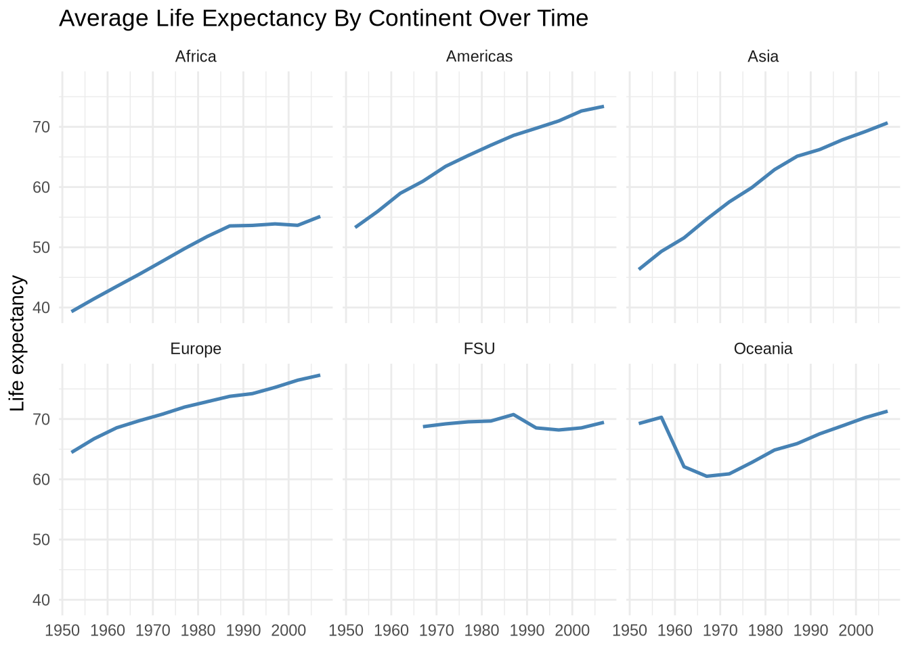
This keeps the structure simple: one line per panel, one panel per continent. Faceting is helpful when a single chart would otherwise require too many overlapping lines.
5.8 Small Multiples For Storytelling
The previous example summarized each continent into one line. Sometimes the individual cases should remain visible too.
Small multiples are useful because they repeat the same visual structure across groups. Instead of forcing all countries into one crowded panel, each continent gets its own panel. The gray lines keep the country-level trajectories visible, while the smoother gives a compact sense of the regional pattern.
ggplot(
gap_raw |> filter(country != "Kuwait"),
aes(x = year, y = gdpPercap, group = country)
) +
geom_line(color = "gray70", alpha = 0.35) +
geom_smooth(aes(group = 1), method = "loess", se = FALSE, color = "navy") +
scale_y_log10(labels = scales::dollar) +
facet_wrap(~ continent, ncol = 5) +
labs(
title = "Small Multiples Clarify Regional Trends",
x = "Year",
y = "GDP per capita"
) +
theme_minimal()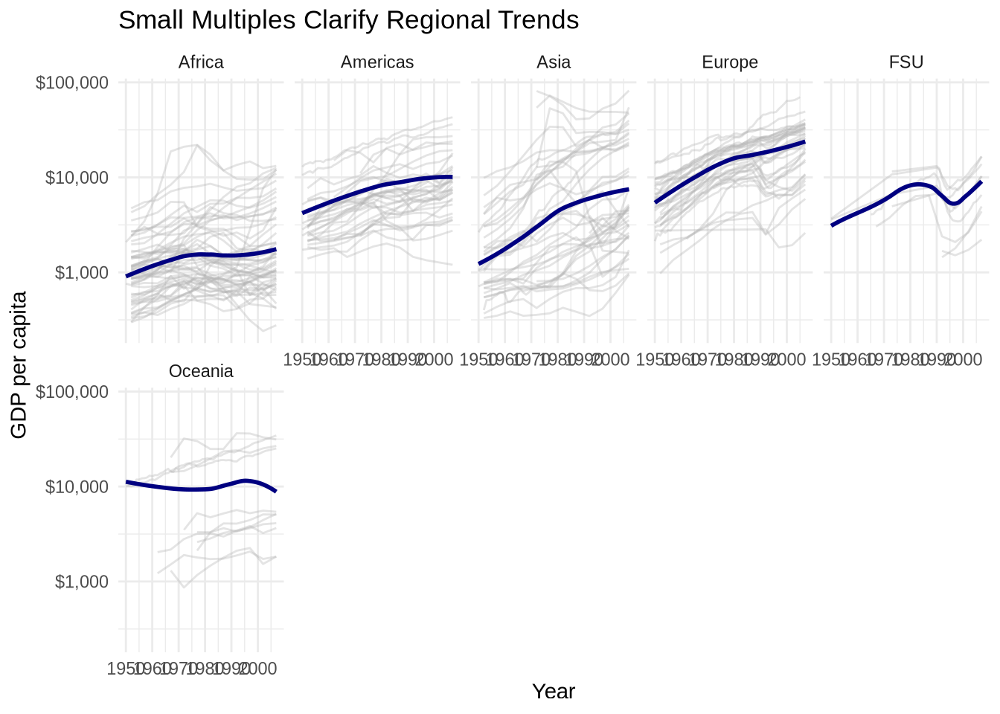
This is still a faceted plot, but it is doing a slightly different job from the earlier scatterplot example. The aim is not only to separate groups. The aim is to preserve a richer set of individual trajectories while keeping the comparison readable.
5.9 Bar Charts
Bar charts are best for categorical comparisons or summarized quantities.
They are also one of the easiest chart types to overuse. Bar charts work best when comparison against a common baseline is central. They work less well when the underlying variable is continuous, when the spread of the data matters more than the summary, or when the ordering hides the actual point of the figure.
5.10 Show The Right Numbers
Bar charts are only as good as the quantity they display.
This version uses raw county-level percollege values directly:
ggplot(
midwest_data |> filter(!is.na(percollege)),
aes(x = state, y = percollege)
) +
geom_col(fill = "gray70") +
labs(
title = "This Stacks Raw County Values",
x = "State",
y = "percollege"
) +
theme_minimal()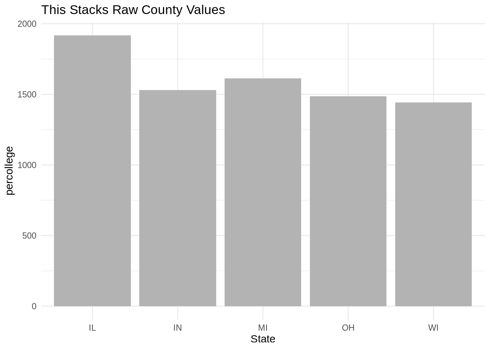
That chart answers the wrong question because it stacks county percentages rather than summarizing them. If the goal is to compare states, the data first need to be reduced to one number per state.
First summarize the data.
college_by_state <- midwest_data |>
filter(!is.na(percollege)) |>
group_by(state) |>
summarize(avg_college = round(mean(percollege), 1))
college_by_state# A tibble: 5 × 2
state avg_college
<chr> <dbl>
1 IL 18.8
2 IN 16.6
3 MI 19.4
4 OH 16.9
5 WI 20 5.11 Why Summarize?
Raw data often contain many observations for each category. A bar chart is usually clearer when it displays one already-computed quantity per group rather than every raw observation. Here, the main comparison is average college education by state, so the county-level data are summarized first and then plotted with geom_col().
5.11.1 Default Order
ggplot(
college_by_state,
aes(x = state, y = avg_college)
) +
geom_col(fill = "steelblue") +
labs(
title = "Average College Education by Midwest State",
x = "State",
y = "Percent with college degree"
) +
theme_minimal()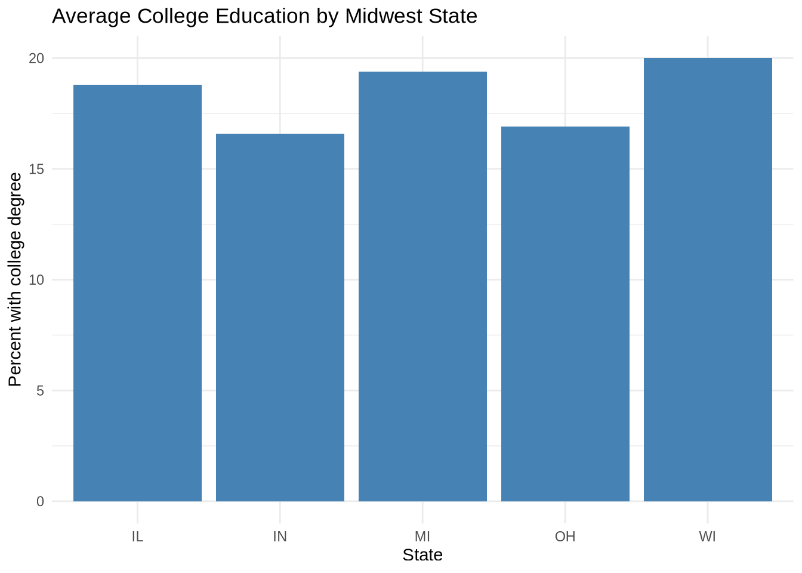
5.11.2 Ordered Bar Chart
ggplot(
college_by_state,
aes(x = reorder(state, avg_college), y = avg_college)
) +
geom_col(fill = "steelblue") +
labs(
title = "Average College Education by Midwest State",
x = "State",
y = "Percent with college degree"
) +
theme_minimal()Ordering matters. Alphabetical order often hides the comparison that matters most.
Reordering is therefore not a decorative trick. It is often the simplest way to make the chart answer the question it was meant to answer.
5.11.3 Adding Value Labels
When a summarized bar chart has only a few bars, value labels can make exact comparisons easier.
ggplot(
college_by_state,
aes(x = reorder(state, avg_college), y = avg_college)
) +
geom_col(fill = "steelblue") +
geom_text(aes(label = avg_college), vjust = -0.4, size = 3.5) +
labs(
title = "Average College Education by Midwest State",
x = "State",
y = "Percent with college degree"
) +
theme_minimal()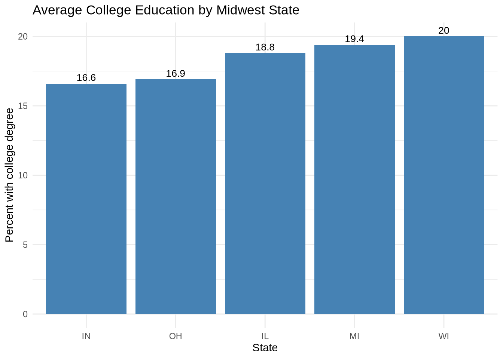
This is the geom_col() version of the count-label idea introduced later with geom_bar(). The important difference is that avg_college has already been calculated, so the label can use that column directly.
5.12 Class Exercise: Improve A Bar Chart
Time: about five minutes.
Start with the summarized college_by_state table. Make a bar chart that:
- orders states by
avg_college - uses
geom_col() - adds value labels with
geom_text() - uses a clean theme
Starter code:
ggplot(college_by_state, aes(x = ..., y = avg_college)) +
geom_col(...) +
geom_text(...) +
labs(...) +
theme_minimal()One solution is in Exercises/04-class-exercise-solution.R.
5.13 Flipping Coordinates
When category labels are long or the ranking matters more than the left-to-right layout, flipping the coordinates can make a bar chart easier to read.
ggplot(
college_by_state,
aes(x = reorder(state, avg_college), y = avg_college)
) +
geom_col(fill = "steelblue") +
coord_flip() +
labs(
title = "Average College Education by Midwest State",
x = "State",
y = "Percent with college degree"
) +
theme_minimal()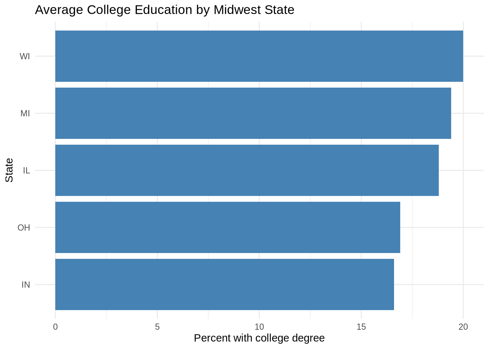
5.14 Hiding A Redundant Legend
Sometimes a legend repeats information that is already obvious from the axis labels.
ggplot(
college_by_state,
aes(x = reorder(state, avg_college), y = avg_college, fill = state)
) +
geom_col() +
theme_minimal() +
theme(legend.position = "none") +
labs(
title = "Average College Education by Midwest State",
x = "State",
y = "Percent with college degree"
)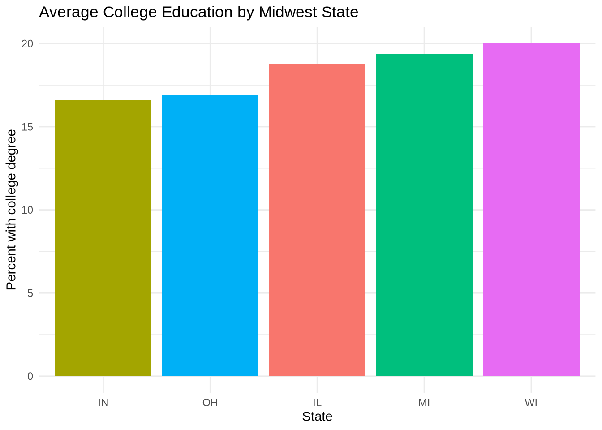
When the x-axis already names every category, removing the legend can make the chart cleaner.
guides(fill = "none") can be used for the same purpose:
ggplot(
college_by_state,
aes(x = reorder(state, avg_college), y = avg_college, fill = state)
) +
geom_col() +
guides(fill = "none") +
theme_minimal() +
labs(
title = "Legend Removed With guides()",
x = "State",
y = "Percent with college degree"
)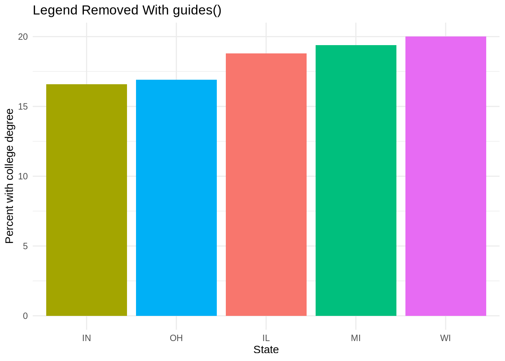
5.15 Counting With geom_bar()
When ggplot2 should count observations automatically, use geom_bar().
ggplot(midwest_data, aes(x = state)) +
geom_bar(fill = "gray50") +
labs(
title = "Number of Counties by State",
x = "State",
y = "Count"
) +
theme_minimal()The distinction between geom_col() and geom_bar() is worth committing to memory. geom_col() expects values that have already been summarized. geom_bar() counts cases internally. A surprising number of plotting mistakes come from confusing those two roles.
5.15.1 Adding Count Labels
ggplot(midwest_data, aes(x = state)) +
geom_bar(fill = "gray50") +
geom_text(aes(label = after_stat(count)), stat = "count", vjust = -0.4, size = 3) +
labs(
title = "Number of Counties by State",
x = "State",
y = "Count"
) +
theme_minimal()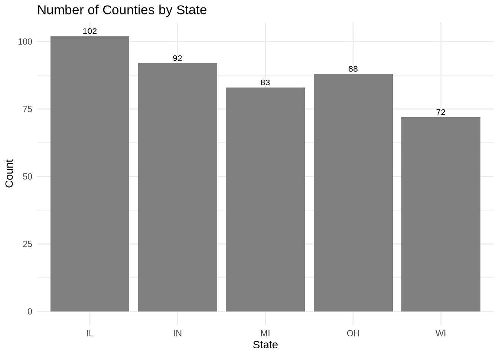
Count labels are useful when the exact values matter and the number of bars is still small enough to remain readable.
5.16 Rotating Axis Text
Sometimes labels overlap because there are too many categories or the category names are too long. One simple fix is to rotate the axis text.
ggplot(midwest_data, aes(x = county)) +
geom_bar(fill = "gray60") +
labs(
title = "County Labels Quickly Become Crowded",
x = "County",
y = "Count"
) +
theme_minimal() +
theme(axis.text.x = element_text(angle = 45, hjust = 1))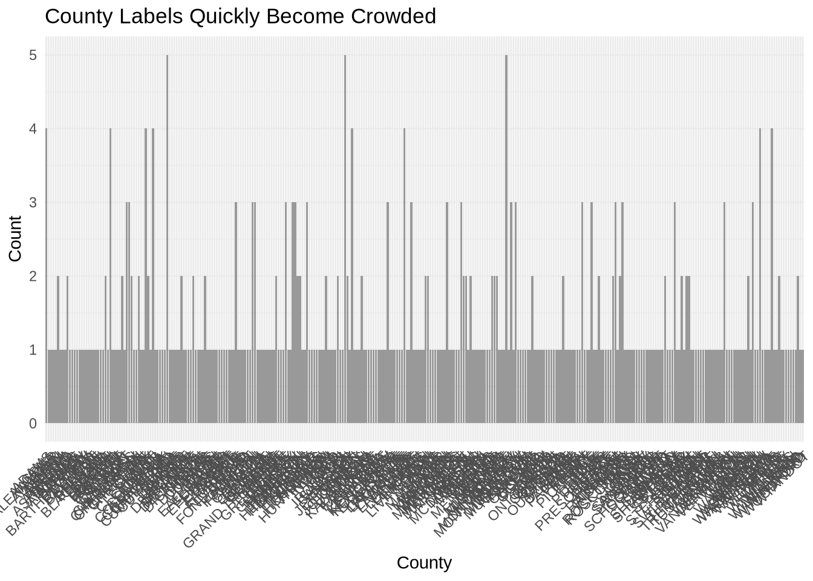
This example is intentionally crowded. Rotation can help, but it is not magic. If too many labels remain unreadable, summarizing, filtering, faceting, or flipping coordinates is usually better than rotating everything.
5.17 A Small Distribution Toolkit
Not every question is about the relationship between two variables or the comparison of category means. Sometimes the main question is simply: how is a variable distributed?
Three compact tools cover many of those situations:
- histograms for the shape of one numeric variable
- density plots for smoothed comparisons across groups
- boxplots for compact summaries of center, spread, and outliers
5.17.1 Histogram
ggplot(
midwest_data |> filter(!is.na(percollege)),
aes(x = percollege)
) +
geom_histogram(bins = 25, fill = "steelblue", color = "white") +
labs(
title = "Distribution of County College Education Rates",
x = "Percent with college degree",
y = "Count"
) +
theme_minimal()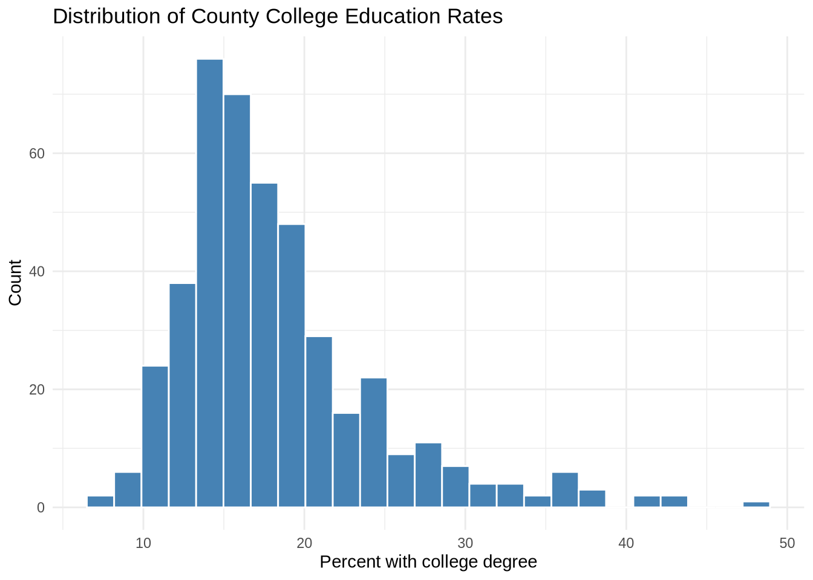
Histograms are useful for seeing skew, clustering, and unusual tails. They are often a good first look at a continuous variable before deciding on a summary or transformation.
5.17.2 Density Plot
ggplot(
gap_raw |> filter(year == 2007),
aes(x = lifeExp, fill = continent)
) +
geom_density(alpha = 0.35) +
labs(
title = "Life Expectancy Distributions by Continent in 2007",
x = "Life expectancy",
y = "Density",
fill = "Continent"
) +
theme_minimal()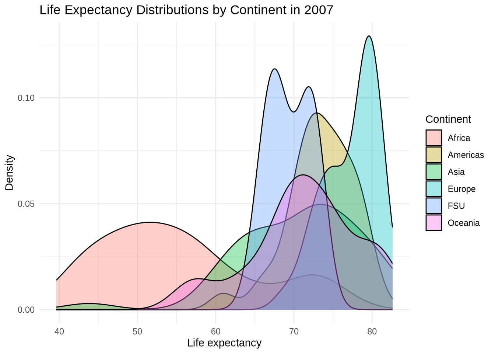
Density plots are useful when several groups need to be compared on the same continuous measure and the main interest is the overall shape rather than individual observations.
5.17.3 Boxplot
ggplot(
gap_raw |> filter(year == 2007),
aes(x = reorder(continent, lifeExp, FUN = median), y = lifeExp)
) +
geom_boxplot(fill = "gray80") +
labs(
title = "Life Expectancy by Continent in 2007",
x = "Continent",
y = "Life expectancy"
) +
theme_minimal()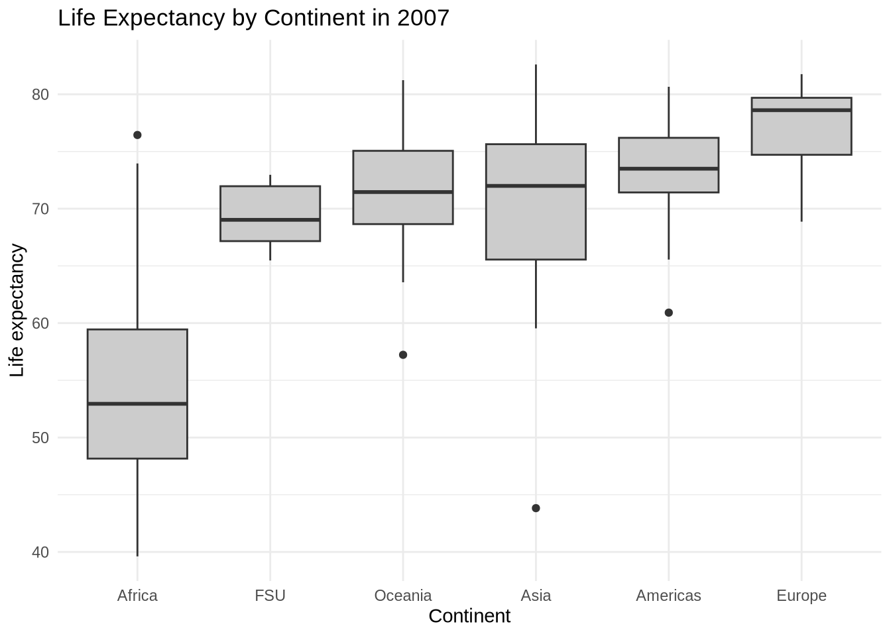
Boxplots compress a lot of information into a small space. They are especially useful when the goal is to compare centers and spreads quickly across several groups.
5.18 Exercises
- Make a line chart of median unemployment duration from
Data/ggplot2/economics.csvand change the date breaks and labels withscale_x_date(). - Make a bar chart of the number of counties by state, then reorder the states by count.
- Replace a color-based comparison with a faceted version and compare the result.
These exercises keep the emphasis on comparison choices rather than on syntax alone. The useful question is not only whether a chart can be made, but whether it separates the data in the clearest way.
5.19 Extra Material
5.19.1 Extra 1: Facets With Free Scales
This is useful for discussing when fixed scales help comparison and when free scales help readability.
ggplot(
gap_raw |> filter(country != "Kuwait"),
aes(x = year, y = gdpPercap, group = country)
) +
geom_line(color = "gray70", alpha = 0.35) +
facet_wrap(~ continent, scales = "free_y") +
theme_minimal()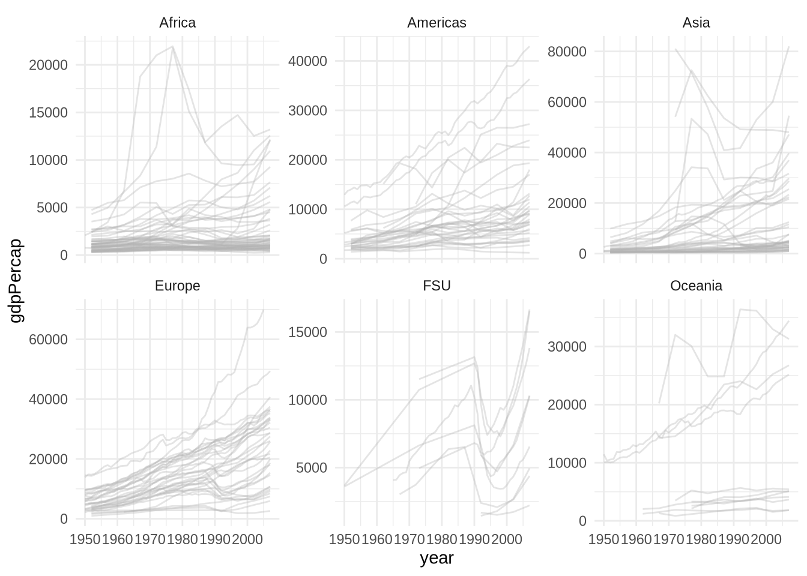
5.19.2 Extra 2: A Bar Chart With Fill
ggplot(midwest_data, aes(x = state, fill = state)) +
geom_bar() +
theme_minimal() +
theme(legend.position = "none") +
labs(
title = "County Counts By State",
x = "State",
y = "Count"
)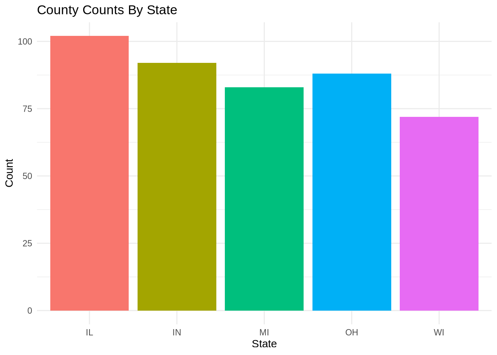
5.19.3 Extra 3: A Dodged Bar Chart
A dodged bar chart places bars side by side within each category. It can work when there are only a few groups to compare.
college_grouped <- midwest_data |>
filter(!is.na(percollege)) |>
mutate(pop_group = if_else(poptotal >= median(poptotal, na.rm = TRUE), "Larger counties", "Smaller counties")) |>
group_by(state, pop_group) |>
summarize(avg_college = mean(percollege), .groups = "drop")
ggplot(college_grouped, aes(x = state, y = avg_college, fill = pop_group)) +
geom_col(position = "dodge") +
labs(
title = "College Education By State And County Size",
x = "State",
y = "Percent with college degree",
fill = "County size"
) +
theme_minimal()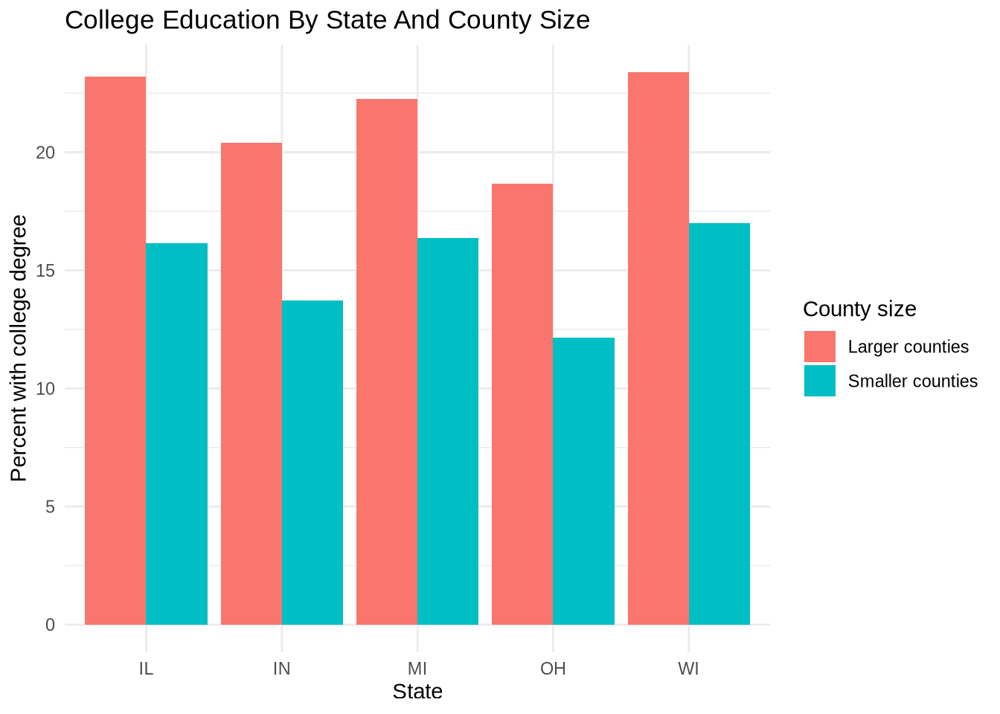
Dodged bars are easiest to read when the number of groups is small. With many categories and many groups, faceting or a different summary often works better.
5.19.4 Extra 4: Using facet_grid()
facet_grid() is useful when the layout should follow a fixed row-and-column structure rather than wrapping automatically.
gap_grid <- gap_raw |>
filter(year %in% c(1952, 2007)) |>
group_by(continent, year) |>
summarize(mean_lifeExp = mean(lifeExp, na.rm = TRUE), .groups = "drop") |>
filter(continent %in% c("Africa", "Americas", "Asia", "Europe"))
ggplot(gap_grid, aes(x = factor(year), y = mean_lifeExp)) +
geom_point(color = "steelblue", size = 3) +
facet_grid(continent ~ year) +
labs(
title = "A Fixed Grid Of Continents By Year",
x = "Year",
y = "Life expectancy"
) +
scale_y_continuous(breaks = c(40, 60, 80), limits = c(35, 85)) +
theme_minimal()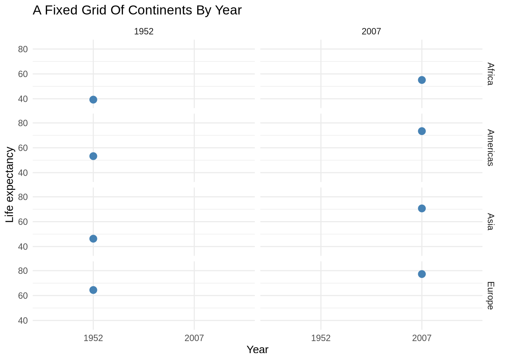
facet_wrap() is often the simpler default. facet_grid() is useful when the row-column structure is itself part of the comparison. Here the rows are continents and the columns are years, so the grid itself helps organize the comparison.
The scale_y_continuous() call uses two arguments that do different jobs. limits = c(35, 85) sets the range of the y-axis. breaks = c(40, 60, 80) controls which tick marks and labels appear.
5.19.5 Extra 5: Combining Plots With patchwork
Sometimes two small plots communicate better together than one overloaded plot.
library(patchwork) # Combine multiple ggplot objects into one layout
scatter_plot <- ggplot(gap_2007_sep, aes(x = gdpPercap, y = lifeExp, color = continent)) +
geom_point(alpha = 0.5) +
scale_x_log10(labels = scales::dollar) +
theme_minimal()
hist_plot <- ggplot(gap_2007_sep, aes(x = lifeExp)) +
geom_histogram(bins = 15, fill = "steelblue", color = "white") +
theme_minimal()
scatter_plot + hist_plot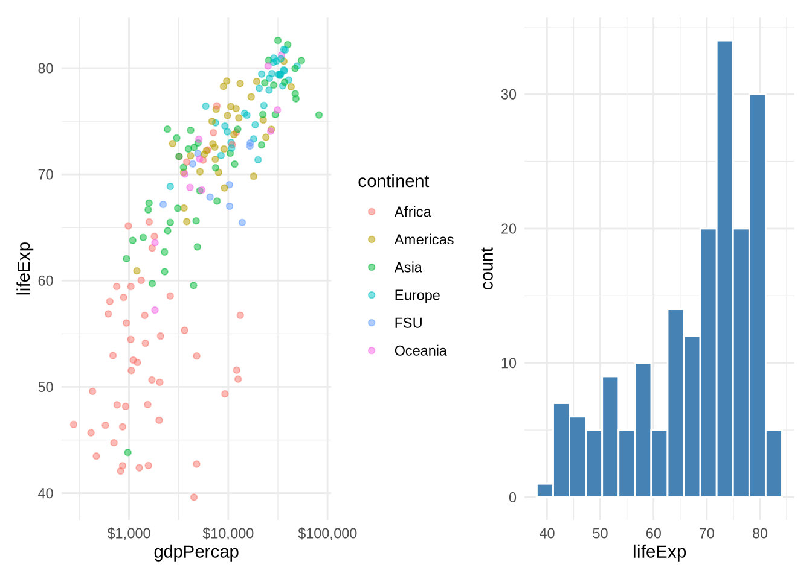
The patchwork package places several ggplot2 objects side by side while keeping each one simple.
5.19.6 Extra 6: Discussion Prompt
- What makes a line chart better than a bar chart for time?
- When does color help, and when does it just add clutter?
- When is faceting better than squeezing everything into one panel?
5.20 What Comes Next
The next chapter moves from chart types and comparison devices to one sustained case study.
The aim there is to follow a question from raw data to a final figure, making each design decision explicit along the way.
Faceting is often clearer when one panel would otherwise become crowded or when direct side-by-side comparison is the goal.↩︎